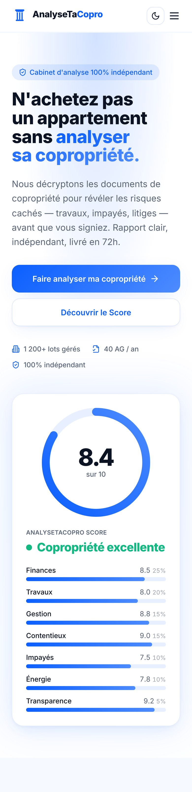

Acheteurs, écoutez ça
Tu
vas
acheter
un
appart ?
ATTENDS.
Vous
avez
eu
le
coup de cœur.
Puis vous recevez…
0
pages de documents de copro.
Et dedans, il peut y avoir :
Travaux cachés
Impayés
Litiges
La solution :
AnalyseTaCopro

Un
expert
analyse
tout.
0.0
sur 10
AnalyseTaCopro Score
Copropriété excellente
Rapport en 72h
Vous
signez
l'esprit tranquille.
AnalyseTaCopro
N'achetez pas sans analyser.
Faire analyser ma copro
analysetacopro.fr
Lien en bio